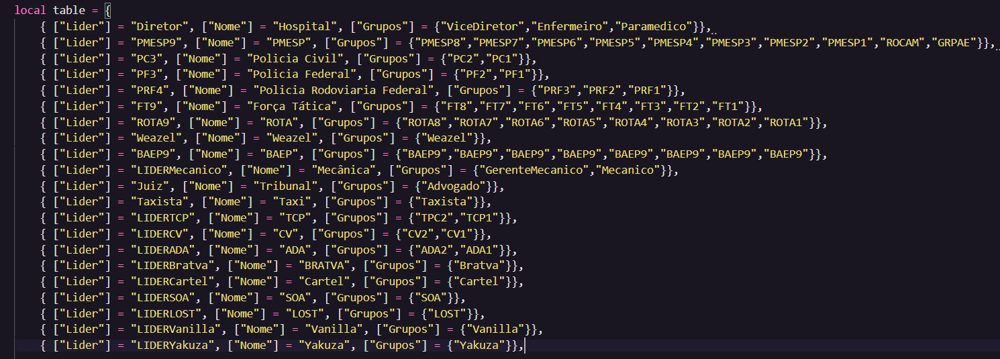
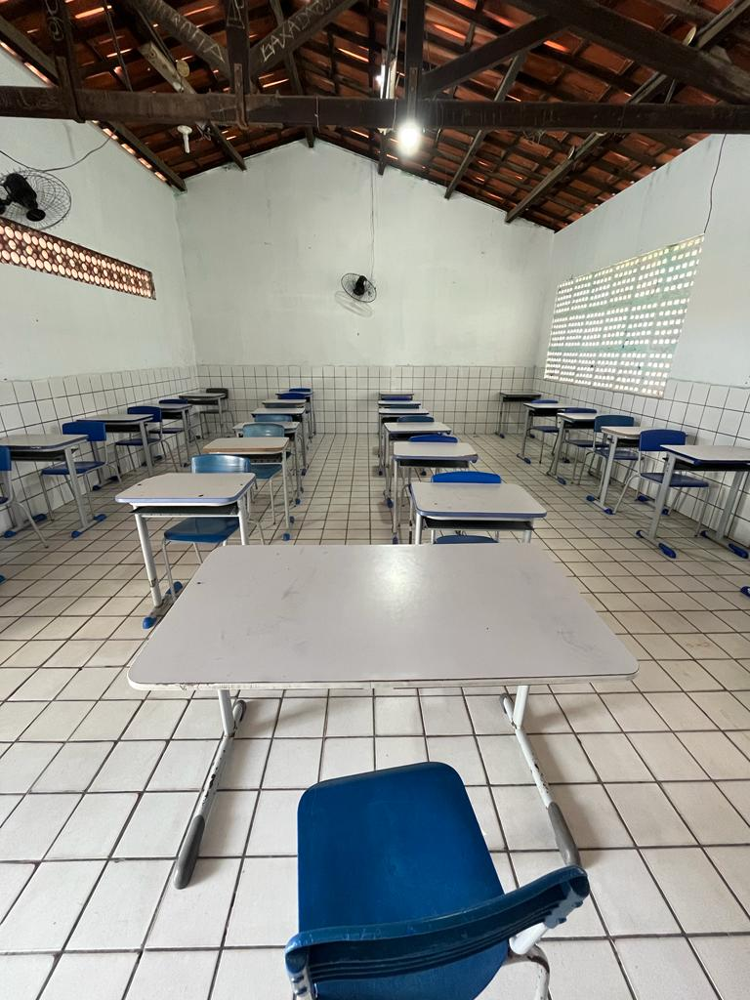
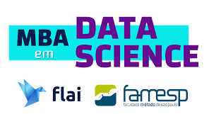
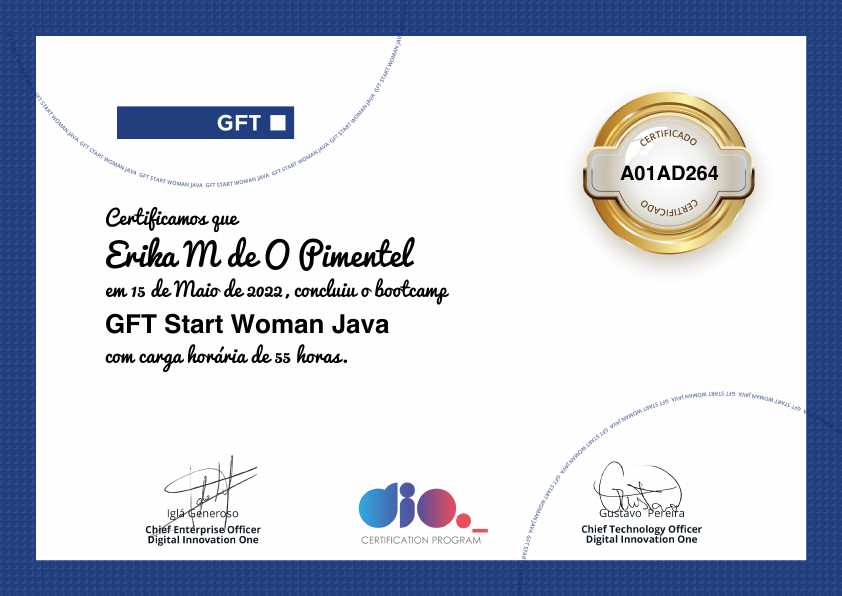
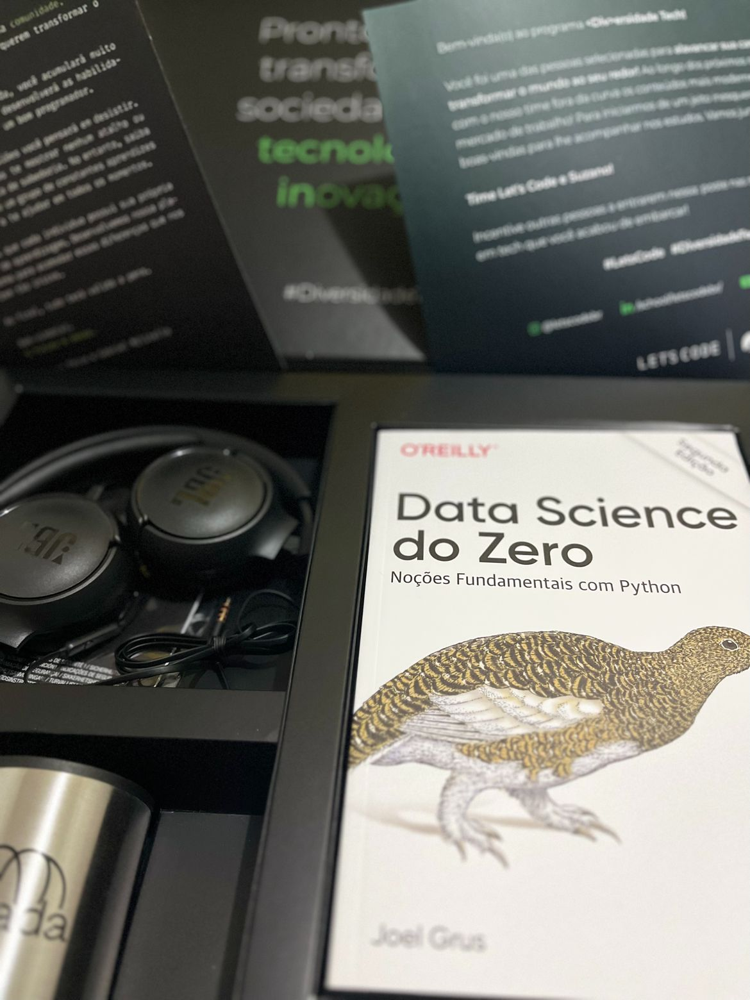
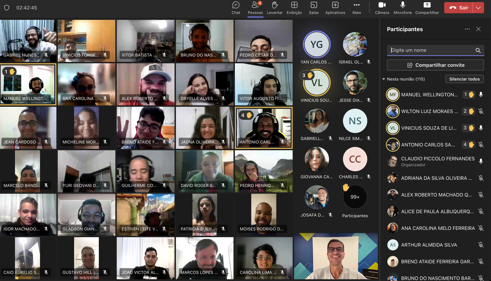

12/06/2020
O início de tudo
Tudo começou no período da pandemia, quando eu descobri um jogo chamado GTA RP. Apaixonei-me e decidi que queria jogar. Para isso, percebi que precisava de uma máquina melhor do que aquela que eu tinha na época. Depois de alguns meses dessa decisão, consegui comprar um bom notebook que atendia a essa necessidade de rodar um jogo como o GTA V. Assim que o notebook chegou, fui logo instalando tudo o que precisava para jogar, incluindo o jogo GTA V, o qual eu já havia conseguido baixar gratuitamente. Em pouco tempo, já estava jogando em um servidor de uma "cidade" chamada Pipoco. Foi lá que fiz vários amigos com os quais mantenho contato até hoje.
24/07/2020
As primeiras linhas de código

Como eu mencionei, nessas jogatinas fiz muitas amizades. Inclusive, um desses amigos é um casal que se conheceu no jogo GTA RP e, atualmente, estão casados na vida real. Esse casal era responsável pelo servidor no qual eu jogava, e eles me convidaram para ajudá-los a manter a organização do servidor, tanto no Discord quanto no jogo. Era como um trabalho de suporte: organizando o Discord do servidor, ajudando a melhorar o jogo, atendendo chamados de ajuda dos jogadores, resolvendo problemas... Inclusive, foi com eles que ganhei meu primeiro dinheiro trabalhando na internet.
Essa experiência foi o meu primeiro contato com a programação. Foi a primeira vez que vi linhas de código de verdade. Todas as noites, entrávamos em call pelo Discord, e o dono do servidor estava sempre mexendo no código-fonte do jogo para fazer alterações e melhorias. Eu sempre acompanhava e o ajudava em todos os momentos, mesmo sem entender nada de programação. Aquilo começou a despertar meu interesse pela área da tecnologia. Ficava muito feliz quando conseguíamos solucionar um problema difícil de encontrar no código do jogo.
23/07/2021
De volta à realidade

Eu sou formada em Ciências Biológicas pela Universidade Estadual do Ceará e trabalho como professora de Biologia nas escolas da rede pública da cidade de Fortaleza há quase 10 anos. Em setembro de 2021, tivemos que retornar ao ensino presencial, o que me causou ansiedade e me lembrou do quanto eu gosto de trabalhar de casa. Esse retorno também me fez recordar dos desafios que enfrentava diariamente dentro da sala de aula, das más condições de trabalho de um professor da rede e do desgaste físico e emocional causados. No entanto, esse retorno também me deu o impulso para fazer uma transição de carreira.
Por esses e outros motivos, comecei a acreditar que eu poderia fazer algo pela sociedade que fosse menos desgastante. Comecei a pensar nisso após uma conversa que tive com um colega de trabalho, que me contou estar passando por uma transição de carreira. Foi a primeira vez que ouvi essa palavra. Para mim, por ter feito a escolha de ser professora, deveria sempre segui-la até o fim da minha vida. No entanto, com essa conversa, percebi que poderia ser diferente, e algumas coisas começaram a mudar dentro de mim. Comecei a pesquisar sobre o assunto, assistindo vídeos sobre como fazer uma transição de carreira e explorando a área da tecnologia. Comecei a me questionar: por que não tentar?
21/02/2022
O MBA em Data Science

Depois de refletir muito, decidi que era hora de iniciar a transição de carreira. Começaram a aparecer várias propagandas de cursos na área da tecnologia, muitos deles na área de dados. Um desses cursos foi o da Flai. Gostei muito dos professores, acreditei na proposta e, por ser algo com certificado e vinculado a uma faculdade, tudo garantido pelo MEC, decidi que era a melhor opção. Tinha um dinheirinho guardado e decidi investir em mim. Foi então que comecei um MBA em Data Science.
O curso é excelente, muito completo. Não tenho nada a reclamar. Ainda não finalizei, a previsão é terminar em julho deste ano. Clicando na imagem, você será redirecionado para a página deles, onde tem todas as informações.
14/07/2022
Cursos livres

Durante todo o processo, procuro me manter atualizada em todas as áreas possíveis da tecnologia, não apenas na área de dados. Por isso, sempre faço cursos livres, principalmente gratuitos. Gosto muito da plataforma DIO. Gosto da metodologia, dos professores. Aprendi muito com os bootcamps em que participei. Concluí dois bootcamps no primeiro semestre de 2022, um com 55 horas e outro com 62 horas. Ambos eram voltados para mulheres e a linguagem de programação JAVA.
Foi muito importante, pois fiz muitos contatos, tive contato com várias mulheres que também estavam em transição de carreira. Tínhamos grupos de WhatsApp onde nos ajudávamos mutuamente. Como era meu primeiro contato com a área, enfrentei muitas dificuldades para realizar os desafios. Graças à ajuda das mulheres do grupo, consegui finalizar o bootcamp com sucesso. Foi nesse momento que percebi a importância do trabalho em equipe dentro da área da tecnologia.
04/08/2022
Evoluindo
Minha rotina é bem puxada, mas mesmo assim a encaro com entusiasmo e alegria, pois tenho certeza de que em algum momento entrarei de fato na área da tecnologia. O processo de aprendizado está sendo intenso e constante. Mesmo trabalhando 40 horas semanais como professora, nunca deixo de estudar nem mesmo por um dia, mesmo que seja por pouco tempo. Normalmente, estudo à noite após o trabalho e aproveito os finais de semana para estudar também. Ao clicar na imagem, você será redirecionado para um pequeno vídeo mostrando um momento de estudo durante as aulas do MBA, onde realizei uma análise de dados sobre aluguéis utilizando histogramas.
12/09/2023
Meu primeiro welcomebox

Lembro-me como se fosse hoje da alegria que foi passar no meu primeiro processo seletivo na área. O processo foi oferecido pela empresa ADA em parceria com a empresa Suzano. O nome do programa era #DiversidadeTech e era voltado para pessoas residentes do Norte e Nordeste do país. Foram mais de 5.000 inscritos e várias fases: curso online, teste de lógica, vídeo de apresentação, dinâmica com especialistas e coding tank. Cada etapa foi um desafio superado.
O curso exigiu muita resiliência e comprometimento, pois as aulas ocorriam às segundas, quartas e sextas-feiras, das 19h00 às 22h00. O curso abrangeu uma trilha de conhecimento exclusiva em Python, Banco de Dados e Data Analytics. Os professores eram todos excelentes. No geral, o curso foi incrível. Sou muito grata por ter tido essa oportunidade. Trouxe um grande avanço no meu aprendizado.
14/02/2023
Primeiro projeto de dashboard
Esse foi o resultado do projeto final do curso #DiversidadeTech, feito em parceria com a Naira Nascimento e o Iure Franklin, um grupinho que formamos durante o curso e que até hoje mantemos contato. Só falta o encontro presencial que combinamos. Eles foram e são muito importantes para mim, nos ajudamos muito no grupo, compartilhamos novidades em nossas vidas, trocamos informações sobre oportunidades de vagas e cursos, e até fofocamos um pouco sobre a vida. Naira e Iure. ❤️
17/04/2023
De volta à Universidade

Ao término do curso da ADA, senti a necessidade de continuar estudando de forma mais formal, por meio de um curso. Foi então que decidi me matricular em um curso superior tecnológico em Análise e Desenvolvimento de Sistemas pelo Centro Universitário Estácio de Ribeirão Preto. Escolhi a modalidade ao vivo para me comprometer a assistir às aulas no dia e horário corretos. As aulas são transmitidas ao vivo pelo Microsoft Teams, de segunda-feira a quinta-feira, das 19h30 às 21h30.
Com o curso, surgem mais oportunidades de candidatar-me a vagas de estágio na área. Até o momento, não consegui migrar de carreira, mas tenho a certeza de que é apenas uma questão de tempo até conseguir. Até lá, continuo estudando e desenvolvendo minhas habilidades.